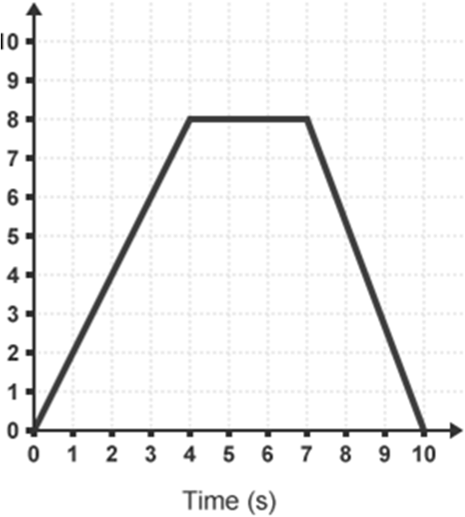
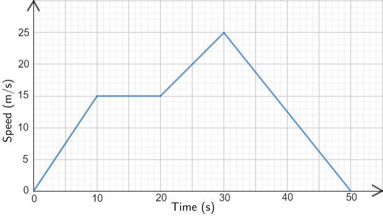
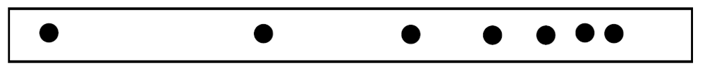

Part A: Multiple choice (10 marks)
The following information relates to Questions 1, 2 and 3.
Ash is running laps of an athletics track. A single lap of the track is 400 m. After running 3 laps of the track, Ash finishes where he started.
What is the distance that Ash ran?
3 × 400 = 1200 m.
What is Ash's displacement?
If you finish where you started, the displacement is zero.
His average speed when running was 33 km/h. What is this speed in m/s?
To convert km/h to m/s, divide by 3.6: 33 ÷ 3.6 = 9.17 m/s.
The difference between speed and velocity is:
A roller coaster's velocity at the top of a hill is 10 m/s. It reaches the bottom of the hill in 2.0 s with a velocity of 26 m/s. What was the acceleration of the coaster?
a = Δv / Δt = (26 − 10) ÷ 2 = 8 m/s2. The direction is down, as it is speeding up down the hill.
The following information relates to Questions 6 and 7.
Kyle stands at the top of the 8 m diving platform. He dives off the platform and accelerates towards the pool at 9.8 m/s2, carrying out a perfect entry into the water.
If Kyle has a mass of 62 kg, what is his weight as he stands on the top of the diving board?
W = mg = 62 × 9.8 = 608 N.
Choose the best option to fill in the blanks. While Kyle was standing at the top of the diving platform, the forces acting on him were __(1)__. When Kyle dived off the platform and accelerated through the air towards the water, the forces acting on him were __(2)__.
At the top his acceleration is zero, so the forces are balanced. In the air he accelerates downwards, so the forces are unbalanced.
A passenger in a car travelling at 25 m/s stops suddenly when a traffic light turns red. The passenger will most likely:
Newton's first law: with no unbalanced force on them, the passenger continues at constant speed in the original direction.
A car is driving along a flat, horizontal road and gently applies the brakes to start to slow down. If the force from the engine is 550 N and the drag forces (not including the brakes) are 200 N, then the force applied by the brakes is:
The car is slowing down, so the backward forces must be larger than the forward force. 550 − 200 = 350, so the brakes must supply more than 350 N.

The displacement–time graph of a toy car moving along a horizontal floor is shown above. The distance travelled by the car is:
The car travels 8 m away and then 8 m back to its starting position: 8 + 8 = 16 m.
Part B: Short answer (26 marks)
Question 1 (6 marks)
The graph below shows the velocity of an RC motor bike travelling on a road.

During what time interval is the motor bike slowing down?
Describe the motion of the RC motor bike between t = 10 s and t = 20 s.
Calculate the magnitude of the acceleration of the motor bike between t = 20 s and t = 30 s.
a = gradient = rise ÷ run = (25 − 15) ÷ 10 = 1.0 m/s2. (1 mark for using the gradient, 1 mark for the answer.)
Calculate the displacement of the RC motor bike between t = 0 s and t = 20 s.
Displacement = area under the graph (a trapezium): x = (a + b) ÷ 2 × h = (10 + 20) ÷ 2 × 15 = 225 m.
Question 2 (5 marks)
Sam set up a ticker timer to measure the motion of a toy car along the ground. The time interval between dots is 0.020 s. Below is a section of the tape; the left end is attached to the car.

Does this section of ticker tape show the toy car speeding up, slowing down or moving at constant speed?
Justify your answer: the distance between the dots is .
The distance between the first dot and the last dot is 13 cm. Calculate the average speed of the toy car in cm/s (round to the nearest cm/s).
There are 6 gaps between the 7 dots, so t = 6 × 0.020 = 0.12 s. sav = d / t = 13 ÷ 0.12 = 108 cm/s.
What is this speed in m/s?
108 ÷ 100 = 1.08 m/s.
Question 3 (10 marks)
Woody is riding Bullseye (the horse) to save his friends. He is accelerating as he gets closer to them.
Draw a dot to represent Woody and Bullseye, and draw arrows to show all the forces acting on them. Include labels and appropriate sizes. Do not ignore friction. Describe your diagram below, then compare.
- 4 forces drawn: weight, normal, thrust, drag (1 mark).
- All forces correctly labelled, e.g. Fweight, Weight or "force on Woody/Bullseye by Earth" (1 mark).
- Appropriate sizes: weight (down) and normal (up) are equal and opposite; thrust (to the right) is larger than drag (to the left) (1 mark).
The total mass of Woody and Bullseye is 3.0 kg. If their acceleration is 0.50 m/s2, calculate the size of the net force acting on them.
Fnet = ma = 3.0 × 0.50 = 1.5 N.
If the force of drag/friction on Woody and Bullseye is 0.20 N, determine the thrust force that Bullseye can create.
Fnet = T − F, so T = Fnet + F = 1.5 + 0.20 = 1.7 N. (Consequential marks are given from part b.)
"As Bullseye runs, his hooves hit the ground with more force than the ground hits his hooves." Is this statement correct? Explain why or why not, with specific reference to one of Newton's laws of motion.
- Incorrect (1 mark).
- The force that Bullseye applies to the ground is equal in size to the force of the ground on Bullseye (1 mark). This must mention Bullseye and the ground specifically, not be a general statement.
- This is Newton's third law (1 mark).
Question 4 (5 marks)
A ball with a mass of 125 g is thrown vertically upwards by Alfonse. The ball leaves his hand, travels up until it momentarily stops, then falls back down to his hand. When the ball leaves his hand it has an initial speed of 34.3 m/s, and it travels for 3.5 s from his hand to the top of its path.
Calculate the weight of the ball while in Alfonse's hand.
W = mg = 0.125 × 9.8 = 1.2 N (remember to convert 125 g to 0.125 kg).
Calculate the size of the average acceleration of the ball.
a = Δv / Δt = (vf − vi) ÷ t = (0 − 34.3) ÷ 3.5 = −9.8, so the size is 9.8 m/s2.
State the weight of the ball at its highest point, where its speed at that moment is zero.
Weight does not depend on speed: it is the same as in part a, 1.2 N.